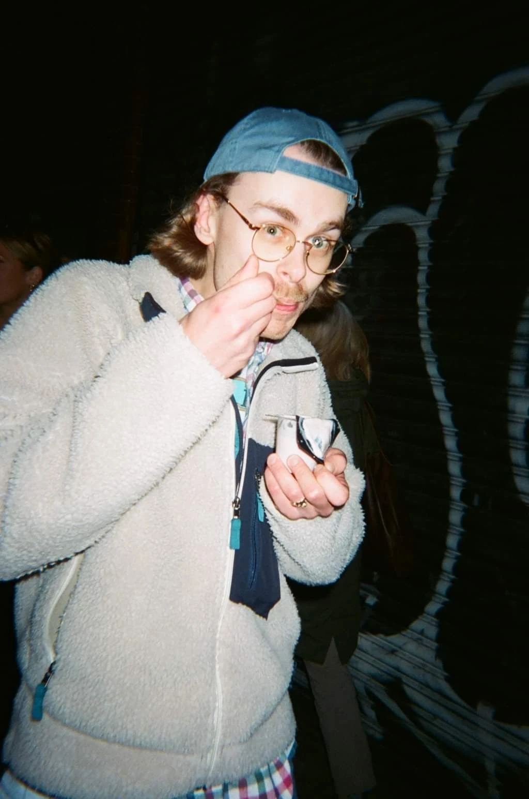

I’ve spent ten years designing products used by millions, from developer tools to the launch of Times Radio. Today I lead design at Zinc, one of the UK’s fastest-growing tech companies: growing the design team, shaping strategy with product and engineering, and owning the delivery of new AI-powered products, while staying hands-on with the problems that matter most.
More about me
